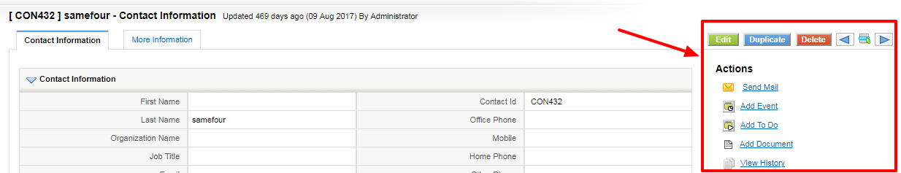

Manage Records in Contacts Module
List of operations you can perform on records in Contacts Home page
- 1. Create Custom filters to classify records as per your requirements. You can be able to limit your search to selected columns and search criteria.
- 2. Search desired records.
- 3. Go to Actions column in List view to perform following operations
-
- Click Edit to modify selected record(s).
- Click Delete to delete selected record(s).
- 3. Go to top left of the List view to perform following bulk operations
-
- Click Delete button to delete selected record(s) in List view.
- Click Mass Edit button to edit selected record(s) in List view.
- Click Send Mail button to send email to selected record(s) in List view.
List of operations you can perform on detail view of Contact record

- 1. Click Edit to modify existing content.
- 2. Click Send Mail to send email to existing Contact record.
- 3. Click Delete to delete the existing Contact record.
- 4. Click Duplicate to clone existing Contact record.
- 5. Click Add Document to attach a document to existing Contact record.
- 6. Click View History to to view history of changes made on Contact record.
- 7. Click Add Event to schedule a Call or Meeting and Select Add To Do to schedule a task.